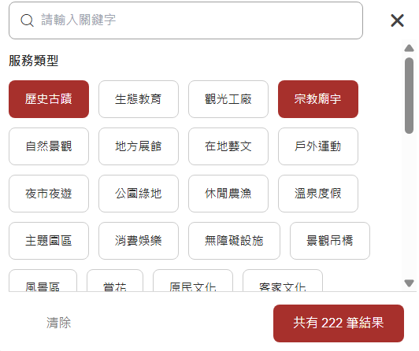
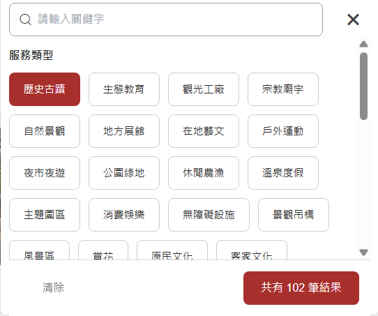
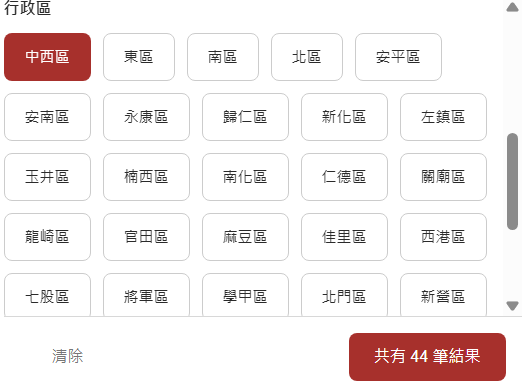
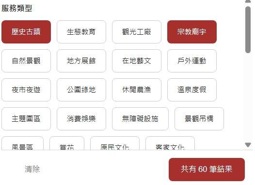
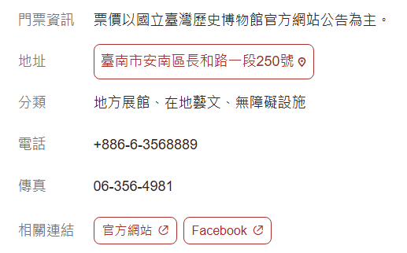
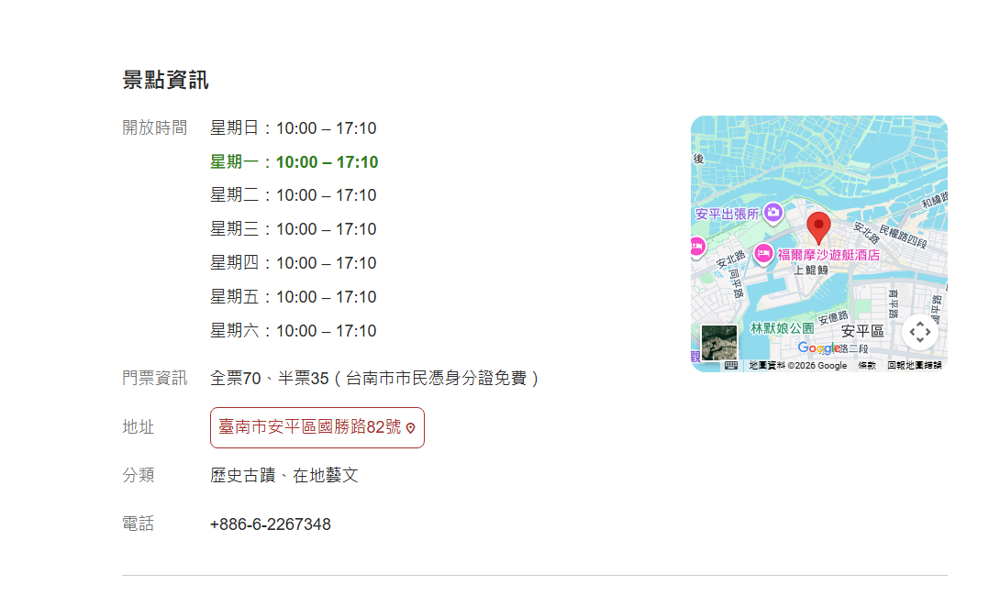
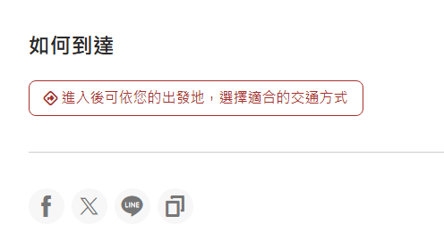

台南小導遊養成記
四年級上學期 · 第 2 課：景點選定與資料蒐集
🔗 已連線：老師公布小試身手答案時，這台會自動同步
① 找景點的好幫手：台南旅遊網

想不到要介紹哪裡？這是台南市政府的官方旅遊網，全台南的景點都在這裡，是我們找主題的好幫手！
🔎 功能一：景點搜尋
- ① 搜尋一個區有什麼景點
- ② 篩選你想要的主題（歷史古蹟、自然景觀…）
- ③ 查景點的詳細資料

🔘 篩選小撇步：點亮按鈕找景點
我們可以透過點亮不同的按鈕，來找出我們要的景點！
點一下按鈕，它就會變成紅色，代表你選了這個條件（例如「歷史古蹟」）。
想取消嗎？再點一次同一個按鈕，它就會變回白色，這個條件就取消了。
✋ 練習看看：點一下下面的按鈕試試看！

多個主題查詢
同時點亮歷史古蹟和宗教廟宇，兩種主題的景點都會出現——結果從 102 筆變成 222 筆，因為兩個主題「加起來」了！
主題 ＋ 區域：先選主題，再選區域

先選主題：歷史古蹟（102筆）

再選區域：中西區
中西區的歷史古蹟，是「歷史古蹟」這個大圈圈裡的一小部分
🤔 考考你：怎麼選出「中西區的歷史古蹟 + 宗教廟宇」呢？
- 點亮主題：歷史古蹟 + 宗教廟宇（多主題查詢）
- 再點亮區域：中西區（主題＋區域）

提醒：查新的景點時，一定要把之前點亮的按鈕取消掉喔！不然條件會一直疊加，越查越少。
🔍 關鍵字查詢
除了點主題按鈕，你也可以直接在搜尋框打關鍵字，找特定的景點！
現在你會用關鍵字查詢了，讓我們來查國立臺灣歷史博物館！

但是你發現門票的位置寫著：「票價以國立臺灣歷史博物館官方網站公告為主。」——沒有寫實際金額！
這時候，看下面的「相關連結」就能找到官方網站，點一下就能看到最新的資料囉！
台南旅遊網的資訊可能不是最新的，遇到寫「詳見官網」的時候，記得點官方連結查最新消息！
🗺️ 功能二：旅遊地圖

用地圖就能看到附近有哪些景點，每一個小圖釘都是一個景點！想找學校附近的景點特別好用。
📄 功能三：點進景點，會看到…
分類、地址、營業時間、門票寫得清清楚楚（例：安平古堡）：
歷史古蹟
10:00–17:10
全票70/半票35
安平區國勝路82號

🚗 交通規劃和分享網站

🚗 如何到達：點進去，選擇你的出發地，網站就會幫你規劃交通方式，知道要怎麼去！
📤 分享網站：想跟家人分享這個景點嗎？點一下 Facebook／LINE／複製連結，就能把景點頁面傳給他們看！
② 任務：景點調查員 🔍
打開台南旅遊網，當一位小小調查員，把答案填進來！
1. 找出 3 個位於「東區」的景點
2. 找出 1 個「在地藝文」景點
3.「水交社文化園區」週六開放時間？
4. 用「主題＋區域」，找出 1 個「東區」的「在地藝文」景點
5. 選一個你找到的景點，看看「如何到達」怎麼寫，抄下一種交通方式
⭐ 加分：「勝利國小」附近有什麼景點？
🎁 尚未完成填好之後，到最下面按「繳交學習單」就會一起交給老師。
📮 繳交學習單
確定都填好了嗎？按下面按鈕交給老師（可以重交，會覆蓋前一次）。